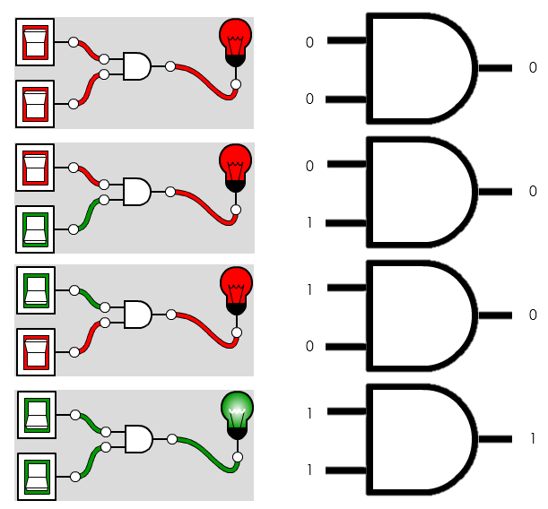
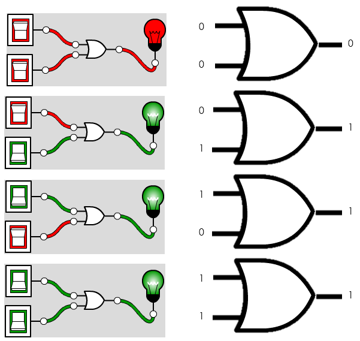
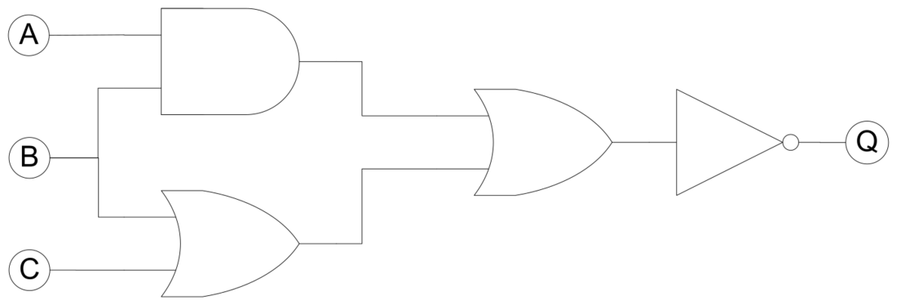

How do AND, OR, and NOT gates process binary inputs — and how do you trace a logic circuit through a truth table?
Boolean logic is the foundation of all digital electronics. Every decision a computer makes — whether an IF condition is true, whether a circuit should output a 1 — reduces to the three fundamental gates: AND (outputs 1 only when both inputs are 1), OR (outputs 1 when at least one input is 1), and NOT (inverts the input). These three gates can be combined into any logic circuit, and any logic circuit can be described by a truth table.
OCR requires AND, OR, and NOT only — XOR is not in the spec, which is a key contrast with AQA. Students must draw and read logic diagrams using the standard gate symbols, construct truth tables for simple and compound expressions (multiple gates in sequence or combination), and apply logic to solve a described real-world problem. The connection to programming is direct: every IF condition in code is a Boolean expression being evaluated by the CPU's logic gates.



Diagrams: PG Online (Paul Long), OCR J277 textbook. Used under the school site licence.